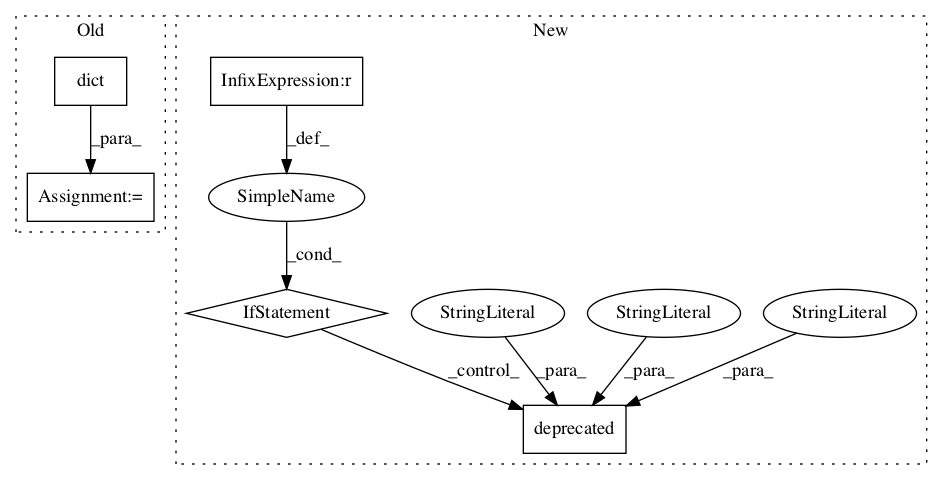

038c439b5275dcf9674b07440207035509d26629,tensorforce/agents/ppo.py,ProximalPolicyOptimization,__init__,#ProximalPolicyOptimization#Any#Any#Any#Any#Any#Any#Any#Any#Any#Any#Any#Any#Any#Any#Any#Any#Any#Any#Any#Any#Any#Any#Any#Any#Any#Any#Any#Any#,214

Before Change
else:
update = dict(unit="episodes", batch_size=batch_size, frequency=update_frequency)
optimizer = dict(type="adam", learning_rate=learning_rate)
optimizer = dict(
type="subsampling_step", optimizer=optimizer, fraction=subsampling_fraction
)
optimizer = dict(type="multi_step", optimizer=optimizer, num_steps=optimization_steps)
objective = dict(
type="policy_gradient", ratio_based=True, clipping_value=likelihood_ratio_clipping
)
if baseline_network is None:
After Change
// Preprocessing
preprocessing=None,
// Exploration
exploration=0.0, variable_noise=0.0,
// Regularization
l2_regularization=0.0, entropy_regularization=0.0,
// TensorFlow etc
name="agent", device=None, parallel_interactions=1, config=None, saver=None,
summarizer=None, recorder=None,
// Deprecated
optimization_steps=None, estimate_terminal=None, critic_network=None, critic_optimizer=None,
In pattern: SUPERPATTERN
Frequency: 3
Non-data size: 5
Instances
Project Name: reinforceio/tensorforce
Commit Name: 038c439b5275dcf9674b07440207035509d26629
Time:
Author: null
File Name: tensorforce/agents/ppo.py
Class Name: ProximalPolicyOptimization
Method Name: __init__
Project Name: reinforceio/tensorforce
Commit Name: 980fe014b6215730ac4fdfa451b067e6fb44e622
Time:
Author: null
File Name: tensorforce/agents/ac.py
Class Name: ActorCritic
Method Name: __init__
Project Name: reinforceio/tensorforce
Commit Name: 980fe014b6215730ac4fdfa451b067e6fb44e622
Time:
Author: null
File Name: tensorforce/agents/dpg.py
Class Name: DeterministicPolicyGradient
Method Name: __init__